Code challenge that is required to be done with Ember.js and RoR → didn't look interesting enough → brainstorming → what if Facebook was purely on pencil and only iPad Pro users were allowed? → how to simplify the coolness of this? → pressure sensitive web app → multi-user pressure sensitive web app → multi-user pressure sensitive web app + Google Docs → DoodleDocs
By now I put my Toggle timer on.
Mindmap: feature disambiguation → plan creation + philosophy of project.
The philosophy is threefold: (1) doing a code challenge, (2) learning RoR and Ember.js and (3) experimenting with Canvas and the pressure sensitive stylus of the iPad pro.
I didn't want to lose momentum, so I decided to design the whole thing on an ipad. I'd have loved to use Sketch, but I do think this gave a quicker impression in the end on what I want and raised some new questions and clarified the project scope.
I doodled the following. I realized that trying to doodle as much as possible, helps me to eat my own dogfood in this particular case, since doodling is *all you can do*.
The layout on the left and critiqued, comments on the right after the black line. During the car trip, I really had issues with buttons such as: save, new and new with current drawing and am still wondering on how to beautifully abstract them away. One way of doing it for saving is to implement an auto-save feature. I also realized that I'd need to create a status bar or messaging div somewhere.
Upon writing this, I realize I should take cues on how Apple did it. Apple Notes divided options into 4 corners: the folder structure to which a note belongs (upper left); the management regarding deleting, sharing, creating a new note, or sharing the note (upper right); the drawing pallet, typing options and attachment options (lower right); and the undo + redo buttons (lower left).
Moreover, I discovered you can kind of already do what I want my web app to do via Apple Notes, albeit it's not quite performant, but it is way better than a paper prototype.
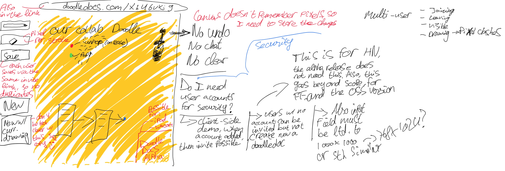The use cases, and demarcating what would become the MVP and what would become the MVP for launching it on sites such as Product Hunt and Hacker News.
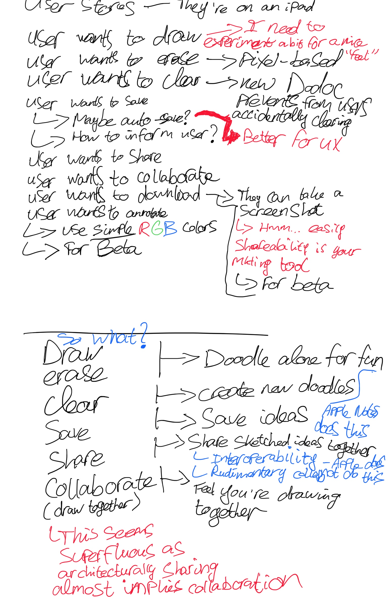In true fashion with the paper and pen approach, I read the docs while annotating them. Then I mind mapped the summaries, so I got a true good grasp of the concepts. It helps that I have had experience with Cocoa Touch and ReactJS in the past, because it made it a lot easier to understand EmberJS right out of the gate. Here are some select screenshots on how it looked like.
How doodling around the code helped me with reading comprehension:
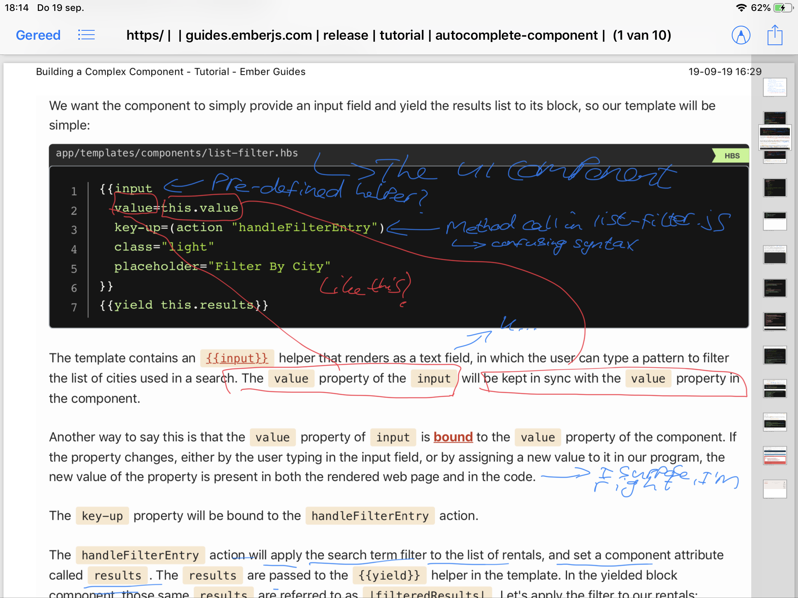This was a summary of a particular section:
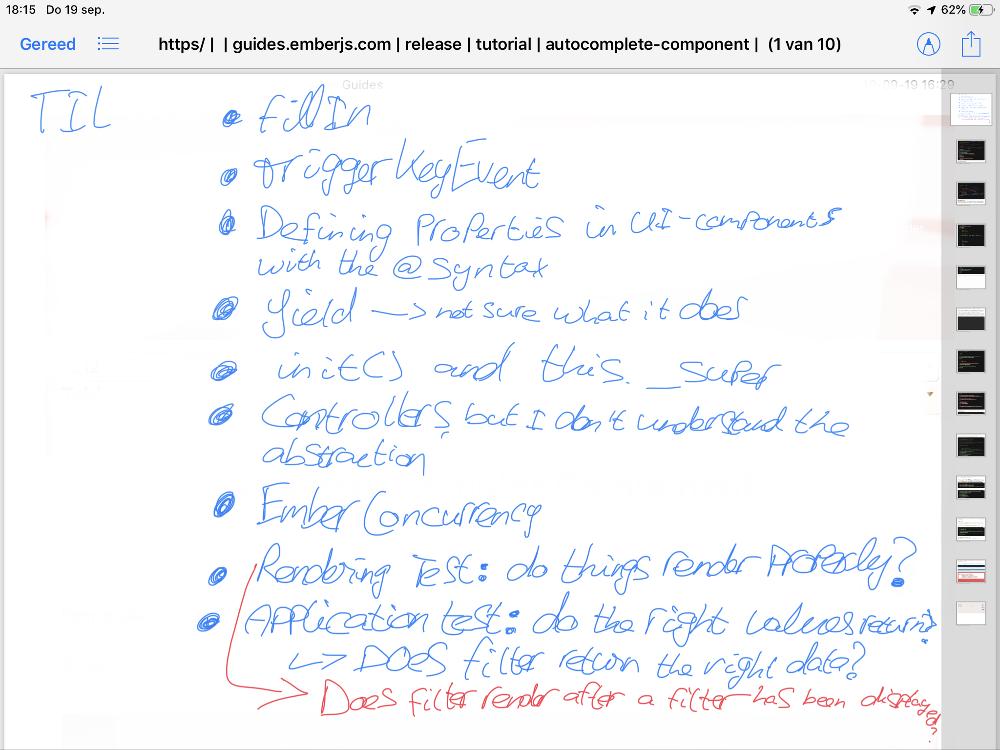I read getting started and until building a complex component in the tutorial. I feel I have enough info to get started with my first challenges. I also critiqued the first parts of my plan. I learned that learning everything all at once is not the best way as it negates some much needed practical experience with more bite-sized components.
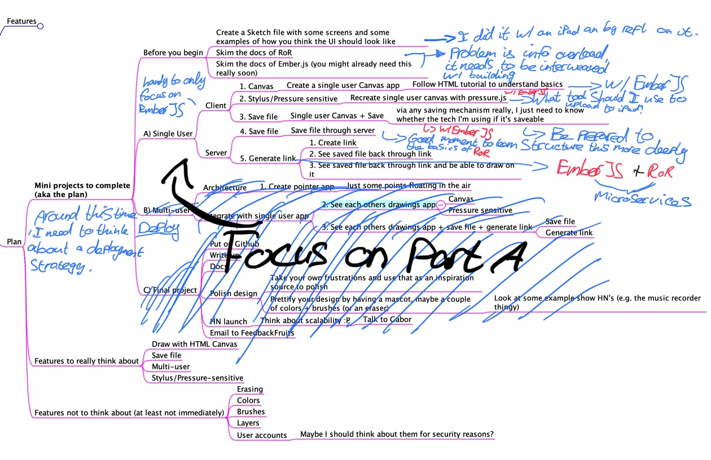I'm experimenting with productive wind-down patterns. I know I need to wind down, but I don't want to watch YouTube or play games for 2 hours straight. So instead of methodically tackling my project, I simply poke around without thinking too much about it. I don't record the time for these sessions. In this particular case, I've learned about a couple of things:
Why hasn't this been done before in the way I envisioned it? Cross-browser compatibility issues? They might arise, but it's partially rendered moot since devices are only going to pressure sensitive styluses in 2018/2019. I'm a bit flabbergasted that there is no drawing/collaboration app that does this. Well, I have now seen it's possible, it all uses Canvas, and I have an idea about the architecture.
Let's go to bed, and proceed with my plan tomorrow. This was quite a productive form of procrastination.
This took me 1 hour and 15 minutes. It was fairly straightforward. Copy/pasting would make it quicker, but I was reading it with the intention to understand, as these prototypes that I'm making are meant for me to get a better understanding. I added an eraser. See the tutorial.
The first thing that I did was install browsersync and set it up. While I still cannot remote debug (I had hoped that I could), I am now able to quickly test my app on the iPad, which was very badly needed :)
After that, I decided to use pressureJS because I need it later on for the pressure. I was a bit puzzled on how to continue since its API looked to be a 180 degree change compared to the Opera dev tutorial. By sketching both function calls out by reading the PressureJS source, I finally realized how to combine the 2 libraries. It took a while.
There were 2 wonky issues: pointer events for the mouse are weird, the movepointer (or whatever its name is) does not have the right pressure and pointerdown does not have the right coordinates. It took me an hour (or two, I didn't check) to figure that out. Furthermore, scroll-locking on the iPad was a pain. I wanted to implement it myself, but I used a library instead, because it was not as easy as a few lines of JS or a few lines of CSS.
This is the result :D
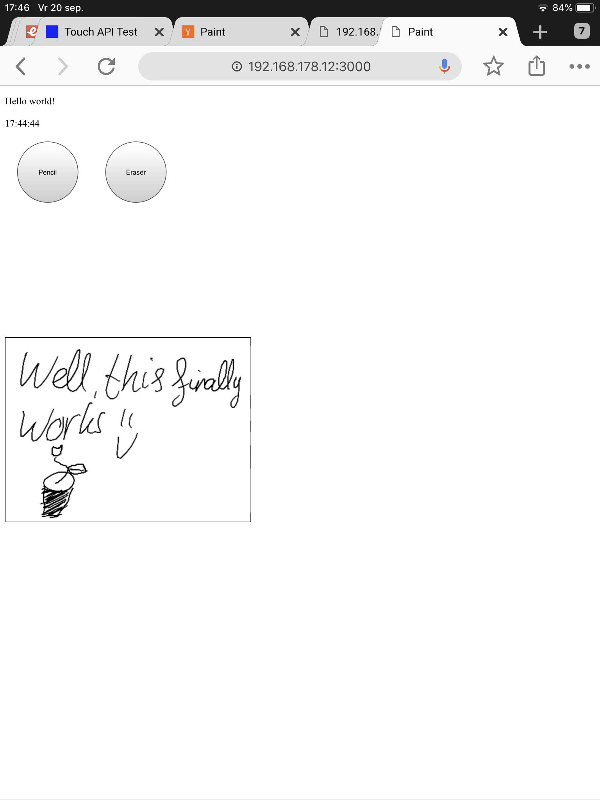This went relatively quick as I found an algorithm (and have an idea about a class of algorithms) on how to influence line thickness directly. The ability to clone a canvas was quickly proven as well by a stackoverflow answer. Now I need to put this stuff into EmberJS
I ran into a huge wall here. EmberJS is so unintuitive when it comes to creating a canvas-based painting application.
I saw this YouTube video on how to create a collaborative drawing app with socket.io. I figured that you could do this with sockets, but I ultimately want to do this via a p2p protocol, but for the coding challenge and open-sourcing it, I don't think it's needed. And it already really helps to test drawing UX, to see what potential issues are.
Moreover, I still want to test whether you can track intent (dots on the screen). I feel a bit bad that I skipped that step, but upon reflection: tracking intent is a refinement step.
My first Anakin Skywalker "IT'S WORKING!" moment.
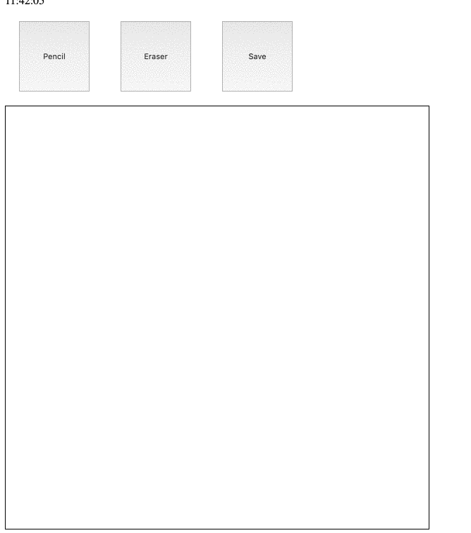Fixing the line thickness bug (and disabling the red color when someone else draws), adding some opacity. Suddenly realizing, I sort of created a pencil. 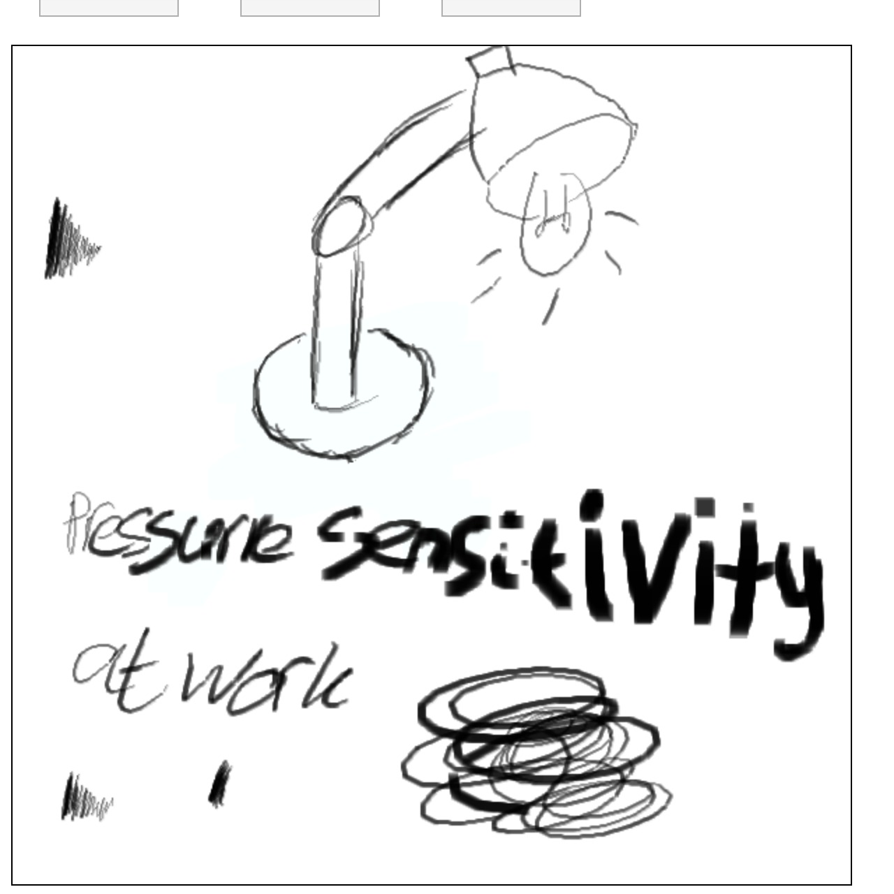
This took so long because it was hard to figure out whether Apple pens support pointer events. They don't support it (not with the Apple pen 1 at least), and then I tried to find a way to sort of hack it together. This worked, but my hackish prototype code was getting a bit in the way. I'm happy I used a single-user app for this as a scaffold, because it was hard enough already as it is. Another reason why it took so long was because overlayed canvases don't play that nice with each other as certain properties of one canvas can interfere with the rendering of the other canvas.
I made the scope bigger because I thought it would be cool. I wanted to make an AI in which you can draw a tic tac toe boardgame, and the doodle app would then understand what the boardstate was.
This has led me into an interesting forray of my own math/programming capabilities, with as well me taking up a neural network course deeplearning.ai from Andrew Ng.
Long story short: my idea was to auto-generate tic tac toe game state boards from squares. And while I did get a whole end thanks Google Quick Draw, it ultimately was not the way to tackle the data generation issue. If you have tic tac toe boards + crosses + circles, then you still need a way to segment the board in order to infer game state, and that is a tough problem.
Me and a friend (who helps me on this) therefore decided to go another way. So the 26 hours was not totally wasted, as I learned a lot by writing a classifier by hand, and learning the basics of neural networks again. But it did take a much longer time than I thought, and compared to the overall time of the project, this time sink was *insane*.
It was also *insanely fun*! It was so fun in fact that I lost sleep over it with excitement. It made me program worse on the next day, but ultimately, I *did* end up creating a gameboard creator that I ultimately wanted, so I am quite happy with that.
I transformed this
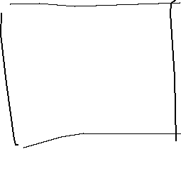programmatically into this
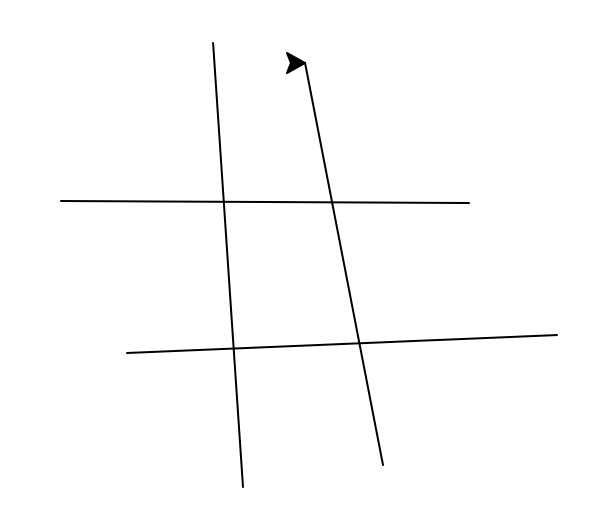The program has a lot of limitations still, but the proof of concept works :)
How I did not find this through my original competitor analysis is beyond me. Ah well, we're too far in. So let's continue!
It took me 4 hours to design the logo (don't ask me how, it did involve a lot of vector drawing, definitely for my skillset) and 3 hours to design a simple website in Sketch. My issue is that I kind of did it from scratch, that's why it took so long. I am happy that I took my inspiration of the Cookie Monster font, I believe it was called.
 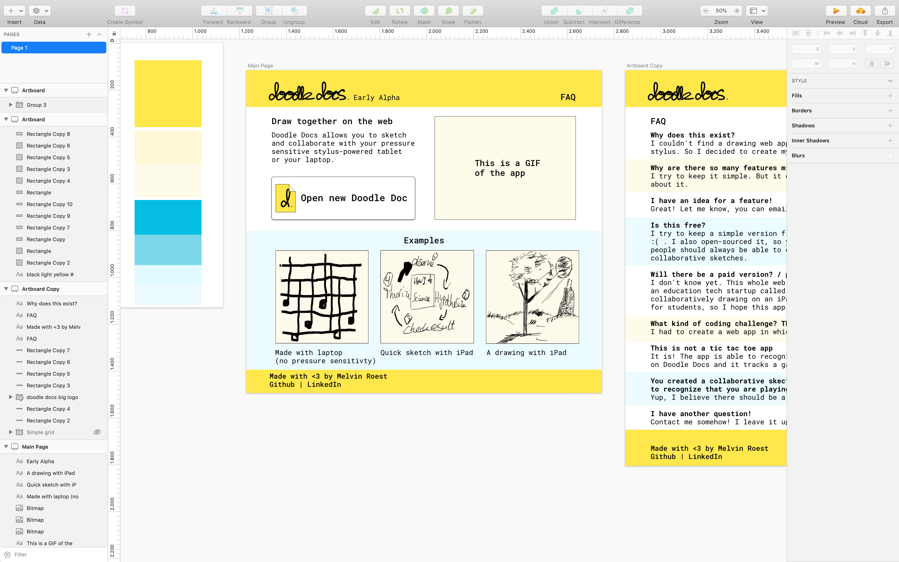
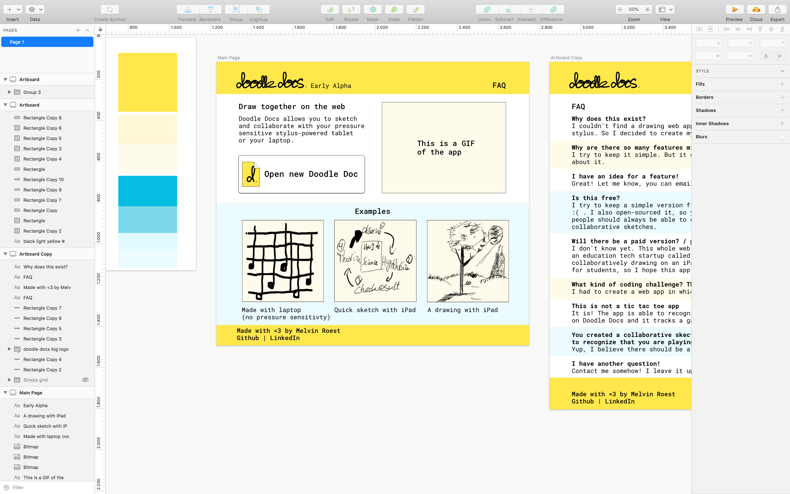
I was procrastinating on using Google Slides as a web page builder and I now build my website via Google Slides. I am still going to recast it in EmberJS and RoR, because I need the practice but I wouldn't see much wrong with this for such a simple website.
I think it also brings GIF images to life, and it makes it clear how it looks with GIFs (since the Sketch file will be exported as an image, it's relatively trivial to do this).
how did this take so long again? I had a nav bar CSS issue that took me a long time. I implemented my own grid system that I've never done before through a tutorial. I was (re)learning the EmberJS basics and learned the git commit --amend command (that last thing just took 10 minutes, mostly searching for it). I'm happy with how my actual design turned out though.
I've noticed that EmberJS plays a bit nicer if you think in ReactJS terms and are hell-bent on creating custom components.
Reimplementing solo canvas was still mostly about learning EmberJS. I had beginner issues with: importing libraries, not being able to use global variables, canvas behaving a bit differently, routing and template rendering. In some of these cases I had a hard time to debug them. In some cases, I simply *guessed* the answer right. I hate this, because it means if I'd be a total beginner, I'd be stuck for even longer. For example, with routing in EmberJS it is apparently needed for your folder structure to reflect your routes. I did not know this and did not explicitly read it in the starter tutorial (maybe I read over it, but probably not). At one point when I exhausted all the logging options, I simply guessed that this was the case and I happened to be right. I hate this type of unexplained automagic, simply because this is steps in a project like this take up 1 or 2 hours more.
The actual reimplementation took 3 hours. That is still quite long, as it took 2.5 hours to copy/paste the code and make it play nice with EmberJS. The other time was spent on redesigning the website layout a bit (where I fiddled with routes and template rendering) in order to have a better user experience.
The first part went incredibly quick.
The second part didn't. I was tasked with creating a blog application in Sinatra and I wanted to make it look pretty. I decided to rip a template. Big mistake, ripping templates makes things a lot harder and longer. I did have a lot of fun :)
I'll now be sensible and when I do Rails, roll my own template.
While I was learning Rails, I had so many issues with Rake. I did the following on purpose: not putting data in the seed file but via the console, not creating foreign key constraints until later. I tried to roll this back, I failed so hard that eventually I simply created a seed file and did a rake db:migrate:reset. Not even rake db:reset could save me as it would load in a NO FILE migration, and I did not want to manually delete it from the database. Other than that learning Rails went pretty well.
Whew! All these self-imposed restrictions are fun! :D But they take a while.
I made a Codepen for this: https://codepen.io/melvinroest/pen/WNNeBpO (new tab)
I was surprised how many different things come to pass when generating a form of training data. But I did it.
This was supposed to be done a lot later on, but I wanted to take a small break from learning Rails.
This is a training example

This is with debug output on. The red dots indicate debug output on whether the board knows of its most important intersections and whether it's capable of identifying what the coordinates of its 9 spaces are.

I thought this would be easy, since you just paste in the IP right? It turns out, that browsers are quite tightened up with security. D'oh! I should've known. I've been learning about: WebRTC (and the whole signaling game, including having stun and turn servers). But I was mostly looking for how to get free signalling and stun servers. And I've figured out an approach, but it also led me to learn a lot of extra stuff. Basically, one can retrofit WebTorrent in order to get a WebRTC signalling server for free. I think I'm halfway done, so I'll leave it for now. Chris McCormick has done some really interesting work in this space with: Bugout, Dreamtime and Dirc. This particular HN discussion shows the awesome trickery he pulls off.
Omg, I'm now just realizing that I needed to use his library... Ah well, at least now I know *exactly* how it works :P
I'm noticing that the build errors and my JS fumbling is taking time. I'm not used to async/await, and I made a couple of wrong assumptions 😅. Now that those things are gone after 90 minutes, I hope dev time will pick up.
What took so long? Little things really. Me not being sharp as well I suppose and me searching for an Apple pencil took quite a while. I had a few silly mistakes that took me a long time to notice, but it is working now.
Another reason why it took so long is because I was trying out how to get iPad debugging to work. At first, I was stubborn using alert, and I tried a couple of solutions. Since then I simply settled on simply the following: plug iPad with USB onto laptop, open Safari and select the iPad dev window from there, easy peasy.
Services are new. That's why this takes so long. Also I am thinking slowly due to sleep deprivation, because I'm thinking about this project constantly.
Another reason why I was slow is because it took me long to realize two things: I was editing in the wrong text editor. Instead of doodledocs_app I needed to edit in doodledocs-app, I switched editors quite recently (VSCode).
Another reason was: for a long time, I had the assumption that I could connect Socket.io with ActionCable. It turns out: I can't! Because Socket.io is not actually a websocket library, it simply uses websockets.
I was also relatively slow at creating a working server with Ruby, simply because my understanding of Rails and Ruby is still quite low. Put ActionCable on top of it, and you have a slow show.
With that said, I did it! I created my first prototype version of it. I actually still need to stream on all kinds of Doodle Docs, and not a global version of it, but that'll be implemented soon enough.
My git commit was: fixed redirection issues with routing and created random URL generation for a doodle doc
It's nice when something works quite quickly and according to plan.
Now 'all' I need to do is fix the RoR side for this. Bugout already supports this :)
Having a lot of issues with importing a script in a Web Worker. Setting up the Web Worker has been a challenge in itself. Ember does not really play nicely in this respect. Lol, it only took 3 hours. I have an abomination of a browserfied bundle in a public folder that is required by RequireJS. Great...
After everything working, I have learned that web workers don't support WebRTC. AAARGGGHHHHH!!!! 9-83W45-87ERP$%W"^:W$%Y$WU%TEDFZ8PU934W$%%^#%$&#^#%^
I guess that sums up my thoughts.
Ah, it's the key signing of tweet NaCl that is giving me a run for my money. I'll just turn it off then :D I'm so surprised at how easy this was. If only I had a strategic mindset from the outset, I'd have solved this problem in 30 minutes. This is definitely a lesson for in the books.
Let's show a before and after (both still have palm cancellation issues though).
Before
After
It took me quite a while to understand what a production build does. I think I should've read the docs earlier? Even then... It's also that Github Pages isn't the ideal deploy target.
While I was technically done with deployment, I optimized a couple of things. One of the things I did was writing my deployment copy/paste script in Boostnote. I also learned that putting in a 404.html makes my routes routable on page refresh! This is the deploy script:
#Build copy/paste script
export TARGET="gh-pages" &&
ember github-pages:commit --message "Pre-commit version: $(ruby -e 'puts Time.now')" &&
git checkout gh-pages &&
cp index.html 404.html &&
git add 404.html &&
git commit -m "Full commit version: $(ruby -e 'puts Time.now')" &&
git push --set-upstream github gh-pages --force &&
git checkout @{-1}